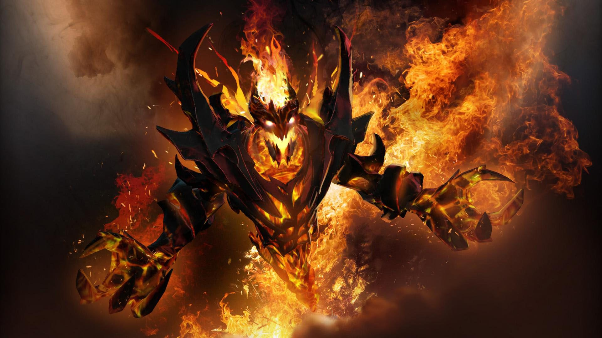
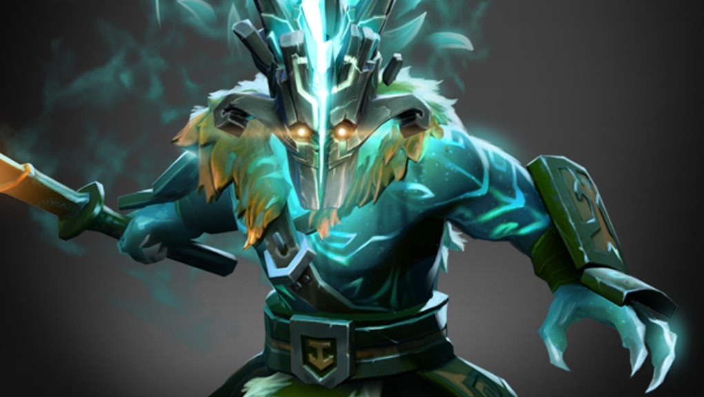
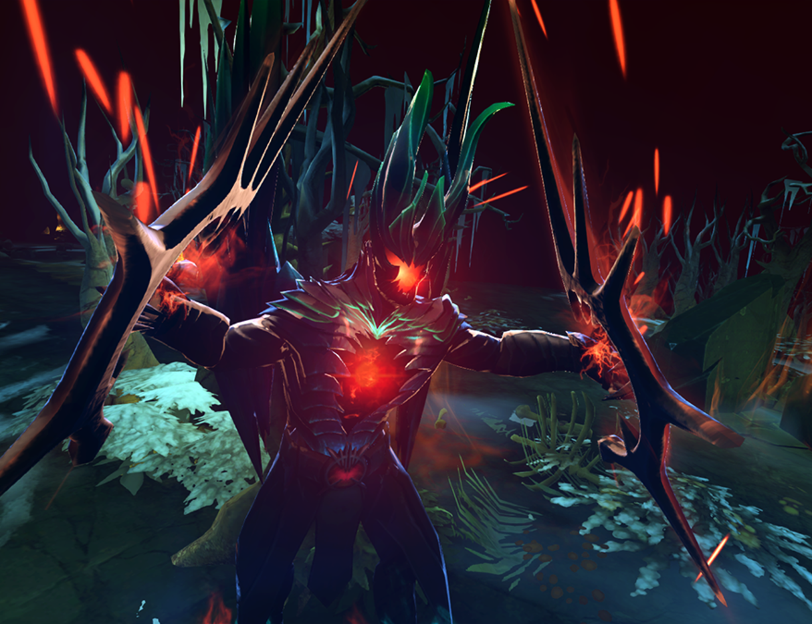

HEROE DE AGILIDAD
SHADOW FIEND
Se dice que Nevermore, el Diablo de las Sombras (Shadow Fiend), tiene alma de poeta; de hecho, tiene miles de ellas. Durante los años se ha hecho con las almas de poetas, monjes, emperadores, mendigos, esclavos, filósofos, criminales y, naturalmente, héroes. Ningún tipo de alma se le escapa. Lo que hace con ellas sigue siendo un misterio. Nunca nadie ha visitado el Abismo de donde Nevermore emerge como una anguila de entre rocas astrales. ¿Las devora una tras otra? ¿Las usa para decorar los pasillos de un templo misterioso o las conserva en salmuera nigromántica? ¿Es meramente una marioneta controlada por un titiritero demoníaco a través de la grieta dimensional? Tal es su maldad, tan intensa es su aura de oscuridad.
VER VIDEO

HEROE DE AGILIDAD
JUGGERNAUT
Nadie ha visto nunca el rostro que se oculta bajo la máscara de Yurnero el Juggernaut. Incluso que tenga uno es solo especulación. Por desafiar a un señor corrupto, Yurnero fue exiliado de la ancestral Isla de las Máscaras, un castigo que le salvó la vida. Poco después, la isla desapareció bajo las olas en una noche de magia vengativa. Solo le quedó continuar con la larga tradición Juggernaut de la isla, una de rituales y manejo de la espada. Como último practicante del arte, la confianza y el valor de Yurnero son el resultado de una práctica sin fin y su original dominio de la hoja demuestra que nunca ha dejado de desafiarse a sí mismo. Sin embargo, sus motivos son tan inescrutables como su expresión a pesar que lo perdio todo.
VER VIDEO

HEROE DE AGILIDAD
TERRORBLADE
Terrorblade es el merodeador demoníaco, un espíritu maligno al que incluso otros demonios temen. Este iconoclasta cósmico robó a los Señores de los Demonios, ignoró el código de rituales que deberían haber limitado su conducta y quebrantó todas y cada una de las leyes de las siete Regiones Infernales. Por sus crímenes tuvo que aprender una lección: hasta el Infierno tiene un infierno. Hubo un breve y brutal juicio, con muchos muertos en todos los bandos, y finalmente fue encarcelado en Foulfell, una dimensión oculta donde los demonios encerraban a los suyos. Pero Foulfell no es una prisión normal. En este oscuro espejo de la realidad se sentencia a los demonios a contemplar eternamente el retorcido reflejo de sus propias almas. Pero en lugar de sufrir, Terrorblade dominó el reflejo de la peor versión de sí mismo.
VER VIDEO

HEROE DE FUERZA
EARTHSHAKER
Como un gólem o una gárgola, Earthshaker fue uno con la tierra, pero ahora camina libremente sobre ella. A diferencia de las otras entidades, se creó a sí mismo a través de un acto de voluntad, y no sirve a ningún otro maestro. En su sueño inquieto, encerrado en una profunda fisura en la piedra, se dio cuenta de la vida que transcurría libremente por encima de él y se volvió curioso. Durante una época de temblores, los picos de Nishai fueron sacudidos, provocando derrumbamientos que cambiaron el curso de los ríos y convirtieron los valles poco profundos en abismos sin fondo. Cuando la tierra finalmente dejó de temblar, Earthshaker salió del polvo que se asentaba, apartando enormes rocas como si se tratasen de una ligera manta. Se convirtió en una bestia mortal, y se llamó a sí mismo Raigor Pezuñapétrea hijo prodigo.
VER VIDEO